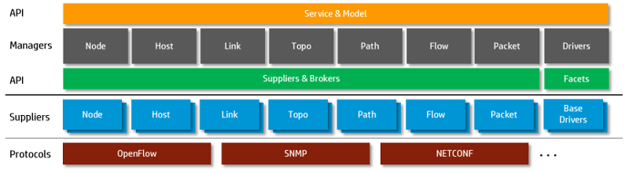

Network Services Abstraction Layer provides a crisp API
for consumers to introspect the network information model,
and allows various suppliers to contribute to the model.
More overview documentation to be added at a later time...
- separation of concerns
- device drivers
- fast i/o
- ...